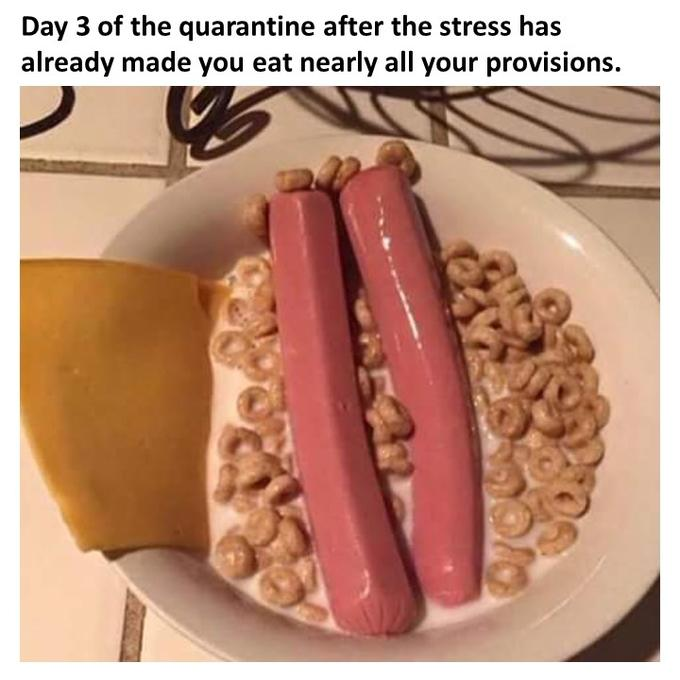

Main Dish And Dessert Special!

Description
Warning: this meal prep is controversial.
It will divide us into those who first put the milk and those who put the cereal first.
You have been warned. Now proceed with caution.
Food? Hot Dogs and cereal. Time? About a minute or so.
Bonus: you can also enjoy watching some type of entertainment while the hot dogs cook.
Satisfaction: Maximum. Nutriton: Over 9000
Ingredients
- Hot Dogs
- Cereal or Milk (whichever you think comes first)
- Big ol' pot (for cooking not eating)
Steps
- Take hot dogs
- Cook
- Choose whether you're the milk-first or the cereal-first type of person.
- Enjoy this masterpiece
Back to the homepage